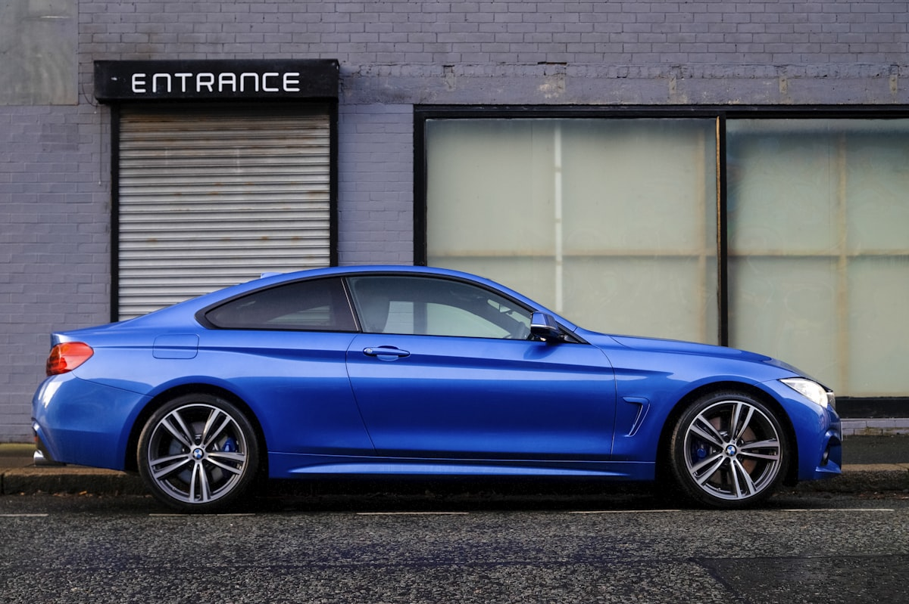

Shop by Vehicle
Custom-fit recommendations for your specific ride
18 different tactical seat covers compared across durability, fit, and real-world conditions — mud, sun, rain, dogs, kids. Here's what holds up.
See the Rankings ↓Custom-fit recommendations for your specific ride
Full-width reviews — our most detailed breakdowns

Mil-spec 1000D Cordura with real MOLLE System w/ PALS Webbing and true Bar Tack stitching (not decorative pouches), SRS airbag compatible, made in the USA. Custom-fit patterns for every supported vehicle — no universal sizing.
🔥 Why it won: Bartact combines the strongest materials in this category with real MOLLE functionality, vehicle-specific patterns, and fitment that does not bunch or slide around like cheaper universal options.
High-quality 1000D Cordura with excellent stitching and custom fit. Made in the USA. However, lacks MOLLE integration which limits tactical utility. Higher price point than Bartact for fewer features.
The best option under $300 if you want custom fit. Uses 500D Cordura — thinner than Bartact or TigerTough but still significantly better than polyester alternatives. No MOLLE. Made overseas.
Cheapest way to get MOLLE on your seats, but the 600D polyester showed pilling and fading in our 3-month test. Universal fit means bunching and gaps. No airbag certification — a real concern.
Water-resistant neoprene at a budget price. Not technically "tactical" but popular with Jeep and Tacoma owners. Decent fit, no MOLLE, basic airbag cutouts. Fine for light use but not trail-rated.
Newer brand with MOLLE-compatible panels at mid-range pricing. 900D polyester — not true Cordura but heavier than Smittybilt. Decent Jeep fitment, limited truck coverage. Worth a look if Bartact is over budget and you want MOLLE.
Not tactical, but popular with Jeep owners wanting water-resistant covers. Neoprene is comfortable and great for wet environments but lacks abrasion resistance and any tactical features. No MOLLE, no pouches — just clean water protection.
| Brand | Price | Material | MOLLE | Airbag | Custom Fit | Made in USA | Berry | Rating |
|---|---|---|---|---|---|---|---|---|
| Bartact | $249–$549 | 1000D Cordura | ✔ Real | ✔ | ✔ | ✔ | ✔ | ★★★★★ |
| TigerTough | $399–$649 | 1000D Cordura | ✘ | ✔ | ✔ | ✔ | ✘ | ★★★★☆ |
| Coverking | $199–$449 | 500D Cordura | Limited | ✔ | ✔ | ✘ | ✘ | ★★★★☆ |
| Smittybilt | $89–$199 | 600D Polyester | Pouches | ✘ | ✘ | ✘ | ✘ | ★★★☆☆ |
| Razorback | $179–$349 | 900D Polyester | ✔ | ✔ | ✘ | ✘ | ✘ | ★★★½☆ |
| Diver Down | $149–$279 | Neoprene | ✘ | ✔ | ✔ | ✘ | ✘ | ★★★☆☆ |
Bartact wins — and it's not close. It's the only brand that checks every box: mil-spec 1000D Cordura, MOLLE integration, certified airbag compatibility, custom fit for every supported vehicle, and made in the USA. TigerTough matches on material and manufacturing but charges more and skips MOLLE entirely.
If budget is a real constraint, Coverking's 500D Cordura is the smart compromise — you get custom fit and airbag safety, just with thinner material and no MOLLE. Avoid the universal-fit options unless you truly don't care about how your seats look.
Visit Bartact →Tactical seat covers are just the start. Bull Strap makes heavy-duty limit straps for Jeep, Bronco, and trucks — essential for rigs that see real trail abuse. They also distribute thousands of aftermarket parts through Turn 14.